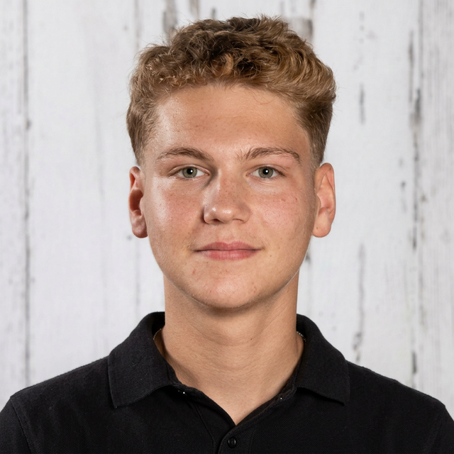

Hyperréalisme Contemporain
Evan
Evan
Pavel.
Matière, texture et profondeur.
Mon travail artistique s'inscrit dans une recherche autour de l'hyperréalisme. À travers le pastel, l'aquarelle et la peinture à l'huile, j'explore les jeux de matière, de texture et de profondeur.
Découvrir les œuvresPortfolio
Sélectionné.
Les fleurs du clair-obscur
AFCAC 2024
03
Une ferme en Provence
Icône sur verre

L'Artiste
Evan
Evan
Pavel.
Jeune artiste né en 2009 dans la région parisienne, Evan Pavel explore l'hyperréalisme en faisant appel à des techniques variées, allant du pastel et de l'aquarelle à la peinture à l'huile.
Formé à la peinture à l'huile selon la technique flamande auprès de son maître niortais Richard Gautier, il a acquis la rigueur technique et une sensibilité au détail.
En savoir plus
Récompenses & Presse
Parcours &
Parcours &
Reconnaissance.
- Lauréat — Concours Franco-Chinois de Dessin Jeunesse (AFCAC) 2024
- Grand Prix — Concours Franco-Chinois de Dessin Jeunesse (AFCAC) 2023
- Prix d'Excellence — Concours Franco-Chinois de Dessin Jeunesse (AFCAC) 2022
- Lauréat — Concours Franco-Chinois de Dessin Jeunesse (AFCAC) 2021
La presse en parle
Contact
Travaillons
Travaillons
Ensemble.
Envie de transmettre un mot d'appréciation ou une proposition de collaboration ?
Me contacter